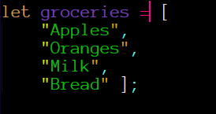
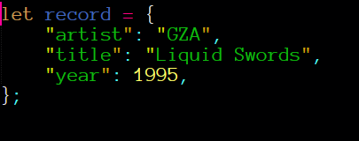

Tech
HTML and CSS
One analogy to describe HTML and CSS: HTML is like the main ingredients to make ice cream like milk, cream, sugar. While CSS could be viewed as the toppings or decorations on the icecream. Such as chocolate sauce, sprinkles, sherbert, waffle cone etc.
Control Flow & Loops
A control flow can be described as the methodology in which tasks are performed. For example driving a car. The control flow would be illustrated as follows: Unlock and open the driver's door. Insert key into ignition. Hold foot on the brake and turn the key 'ON'. Push clutch in and select 1st gear. Release the brake pedal and slowly release clutch while lightly applying the throttle. Off the clutch. Drive. A loop could be described as driving on the highway, you keep on the throttle, until you reach a stop, then you apply the break and stop the loop of applying the throttle.
The DOM
The Document Object Model is an environment that is integreated into the browser that allows for HTML to be manipulated with the representation of nodes or elements. The DOM allows scripting languages such as javascript to manipulate elements on the page that are used in HTML. It is a representation of the hierarchy in HTML, with the HTML tag starting at the top.
Arrays vs Objects
An array is a data type in javascript that holds many values that are held by a single variable. An array is constructed within square brackets [ .. ].
Example of an array in Javascript
To access these, each value is assigned an index starting from 0. groceries[0] would point to 'apples'. You can also have arrays within an array.
An object is another data type, with a collection of key:value pairs inside a variable or class. Each object is constructed within curly braces { .. }.
Example of an object in Javascript
A property of the object can be accessed by writing the object name and property with a period in-between. For example, record.artist. will give you "GZA".
Functions
A function is a block of code with its own scope that contains arugments, parameters and statements. These combined form a function that can be 'called' from anywhere in the code. The user can input the function with arguments to then allow the function to perform the task with those user inputted arguments. The functions scope operates within the global execution context or global scope.
Feb 2021